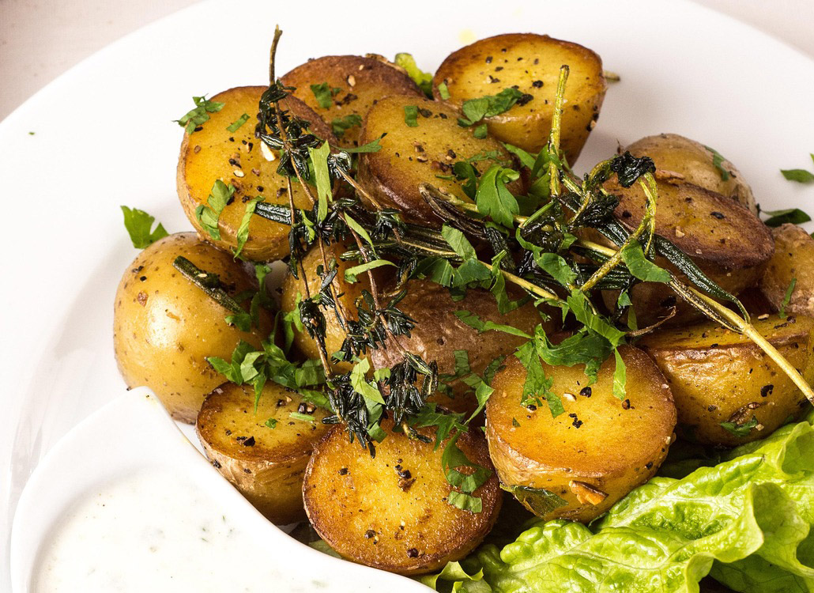

Home
Roasted Potatoes

Description
Roasted potatoes are a great way to get some healthy carbs. This dish makes an excellent side for many dinners and is super simple to make. We will be using an air-fryer
but this recipe could just as easily be made in an oven or toaster oven as well (simply look up temperature and time conversions for your method of choice).
Ingredients
- 1/2 lb. baby potatoes
- 1/2 tbsp. extra virgin olive oil
- 1 tsp. smoked paprika
- 1/2 tbsp. garlic powder
- 1/2 tbsp. onion powder
- salt and pepper to taste
Steps
- First cut baby potatoes into quarter slices on cutting board.
- Add slices to a bowl of cold water and let rest for at least 10 minutes.
- Drain water and path the potatoes dry.
- In a mixing bowl toss the potatoes, olive oil, paprika, garlic powder, onion powder, salt, and pepper together so that the potatoes are well covered.
- Add potatoes to an airfryer that has been preheated to 380 degrees F.
- Cook for 10 minutes tossing the potatoes over halfway through
- Serve and enjoy.